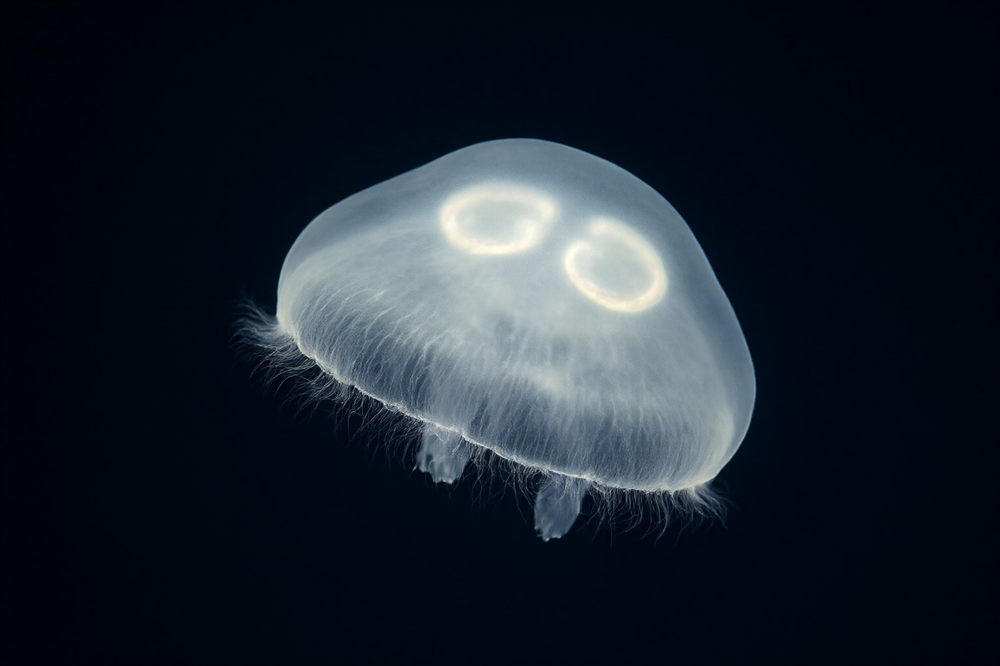
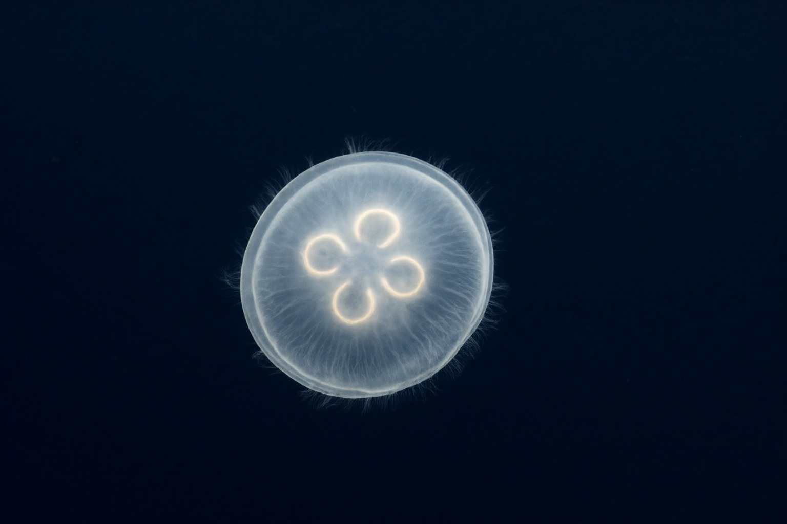
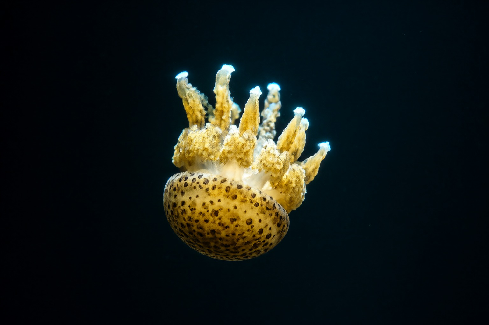
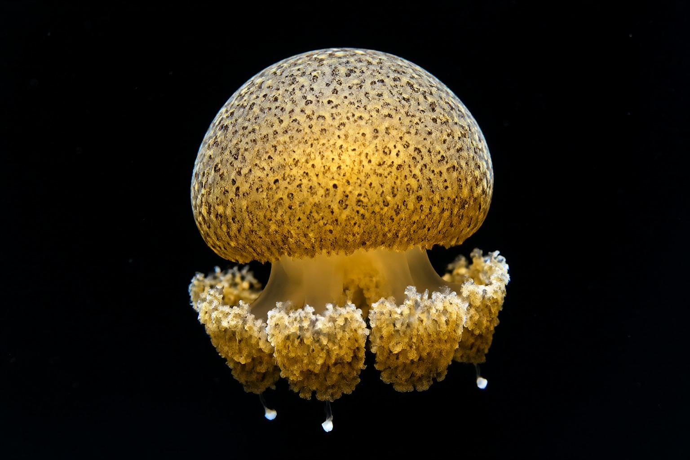
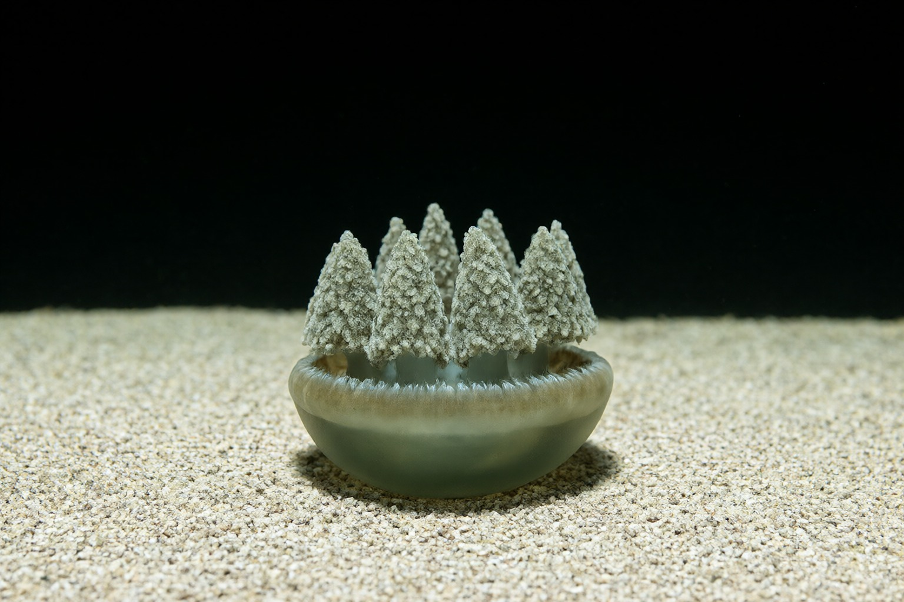
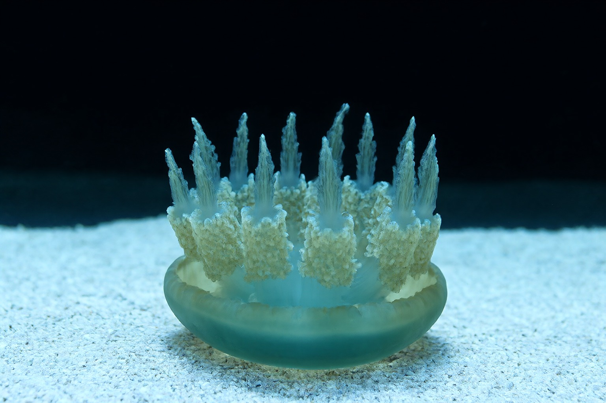

Volné Rodiče: Aur-7 (Aurelia aurita) × samec z linie Cass-1. K odběru od 5. 12. 2026. Klidné a pomalé mládě, které se nechá unášet proudem a nikam nespěchá. Vhodné i pro začátečníky.
RezervaceVolné Rodiče: Aur-7 (Aurelia aurita) × samec z linie Cass-1. K odběru od 5. 12. 2026. Klidné a pomalé, nechá se unášet proudem. Pro majitele, kteří chtějí tiché akvárium.
Rezervace

Volné Rodiče: Aur-7 (Aurelia aurita) × samec z linie Cass-1. K odběru od 5. 12. 2026. Málokdy se rozruší, dobře snáší změny proudění. Pro chovatele, kteří chtějí bezstarostný chov.
RezervaceVolné Rodiče: Papua-B (Mastigias papua) × samec z linie Aur-7. K odběru od 12. 12. 2026. Rychle roste a dobře se adaptuje na umělé osvětlení. Vhodné pro zkušenější chovatele.
Rezervace

V novém domově Rodiče: Cass-1 (Cassiopea) × samec z linie Papua-B. Odběr proběhl 8. 11. 2026. Tvrdohlavé a usedlé mládě, které sedí dnem vzhůru a hýbe se, jen když má hlad. Ukázka našeho odchovu.
RezervaceRezervace Rodiče: Cass-1 (Cassiopea) × samec z linie Papua-B. K odběru od 19. 12. 2026. Pevně lpí na substrátu a dlouho pulzuje bez přestávky. Pro milovníky nenáročných jedinců.
Rezervace
Aur-7 × Cass-1 — předpokládaný termín odběru leden 2027. Očekáváme klidné potomstvo, které se pomalu vyvíjí a dobře snáší změny salinity. Vhodné pro chovatele, kteří chtějí bezstarostný chov.
Přidat se na čekací listinuPapua-B × Aur-7 — předpokládaný termín odběru únor 2027. Očekáváme aktivní a zvídavá mláďata s rychlým růstem zvonu a snadnou adaptací na umělé osvětlení. Vhodné pro chovatele, kteří chtějí nápadný kus.
Přidat se na čekací listinuCass-1 × Papua-B — předpokládaný termín odběru březen 2027. Očekáváme usedlé potomstvo s pevnou adherencí k substrátu a dlouhou nepřetržitou pulzací. Vhodné pro chovatele, kteří chtějí nenáročný chov.
Přidat se na čekací listinuNapíšete nám, který jedinec vás zajímá, a my vám potvrdíme jeho dostupnost. Zároveň pošleme podklady k rodičům a k provedeným zdravotním testům.
Domluvíme prohlídku, na které mládě uvidíte naživo. Po vzájemné dohodě složíte zálohu, která vám jedince na dohodnutý termín rezervuje.
V dohodnutém termínu si mládě odvezete i s dokumentací a startovacím balíčkem. Následně zůstáváme k dispozici pro dotazy k prvním dnům i k dlouhodobému chovu.
Neplatíte tedy nic navíc za čip, očkování, pas ani startovací balíček. Platí se zálohou při rezervaci, která vám jedince závazně drží, a doplatkem při odběru. Přijímáme platbu převodem i na místě, potvrzení o zaplacení dostanete vždy.
Pokud to vzdálenost neumožňuje, po domluvě zajistíme přepravu v chladicím boxu s kyslíkem a vhodnou teplotou. Podmínky přepravy, její cenu i čas vždy potvrdíme předem, abyste věděli, co vás čeká.
Startovací balíček od nás obsahuje krmivo na první týdny, sůl a přípravek na úpravu vody, takže nic dalšího shánět nemusíte. Konkrétní nastavení akvária vám projdeme při odběru a zůstáváme k dispozici i po něm.